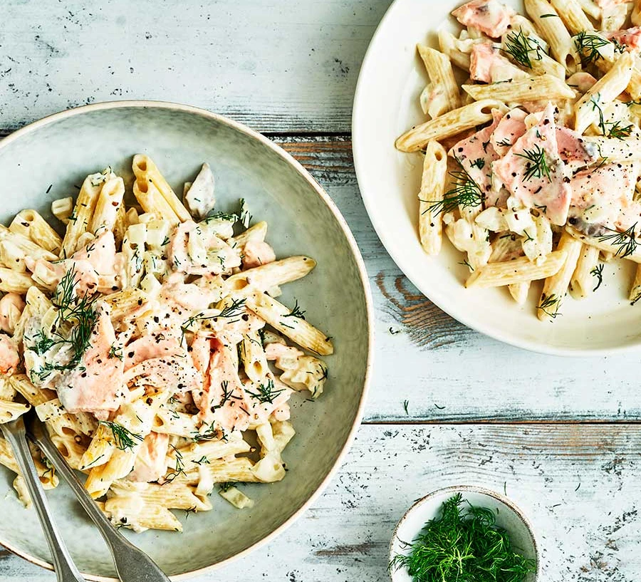

Pasta Recipe

Description
DIndulge in this creamy salmon dish for two.
It's comforting and filling, and ready in
just 30 minutes. Serve with a green salad.
Ingredients
- 2 salmon fillets
- 1 tbsp olive oil, plus 1 tsp if roasting
- 175g penne
- 2 shallots or 1 small onion, finely chopped
- 1 garlic clove, crushed
- 100ml white wine
- 200ml double cream or crème fraîche
- ¼ lemon, zested and juiced
- ½ small bunch dill, finely chopped
Method
- TYou can either steam or roast the salmon, depending
if you want to turn the oven on or not. To roast, heat
the oven to 200C/180C fan/gas 6, place on a baking
tray, drizzle with oil and roast for 12 mins until
opaque and the flesh starts to flake when pressed. To
steam, place the fillets skin-side down in a steamer,
and steam over a pan of simmering water for 8-10 mins
until cooked.
- While the salmon is cooking, boil the pasta for 10 mins
until al dente, then drain, reserving 100ml of the
pasta water.
- Heat the oil on a medium heat in a wide frying pan and
fry the shallot for 6 mins until softened, but not
turning golden. Add the garlic and fry for a minute
more until fragrant. Add the wine, bubble for a few
minutes until reduced by half, then add the cream and
season well. Bring to a very gentle simmer.
- Bring up to the boil, then simmer for 30 mins until
the sauce looks rich.
- Heat oven to 180C/fan/160C/gas 4 and lightly oil an
ovenproof dish (about 30 x 20cm).
- Flake the cooked salmon into big chunky pieces, leaving the
skin behind. Add to the sauce with the cooked pasta. Add
the lemon zest, a squeeze of the juice and most of the
dill. Add a splash of the pasta water to the sauce to
coat the pasta if you need to. Toss gently to keep
the salmon in big pieces. Check the seasoning, if using
double cream you may need a squeeze more lemon juice.
Grind over some black pepper and scatter over the
remaining dill. Serve with a green salad.